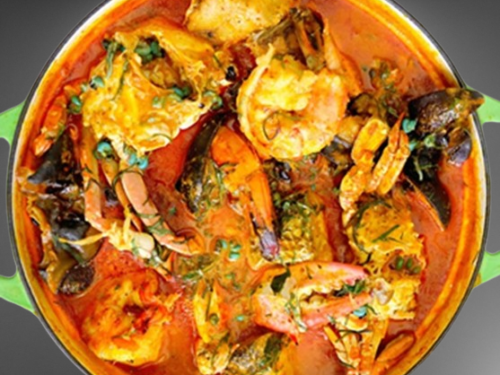

Fisherman Soup
Fisherman Soup is a delicious Nigerian delicacy native to the riverine
regions of Nigeria. It's a spicy and savory soup made with fresh seafood
like fish, shrimp, and periwinkle, and often enjoyed with pounded yam or
fufu. Perfect for seafood lovers!

Ingredients
- Fresh fish (Catfish or Tilapia)
- Prawns or shrimp
- Periwinkle
- Palm oil
- Fresh pepper and onions (blended)
- Crayfish (ground)
- Seasoning cubes
- Salt to taste
- Scent leaves or uziza leaves
- Water
Instruction
- Wash and clean the fish, prawns, and periwinkle properly.
-
Season the fish and seafood with salt, seasoning cubes, and a little
blended pepper, then set aside to marinate for a few minutes.
-
In a pot, pour some water and bring to a boil. Add the marinated fish
and seafood.
- Add the blended pepper and onions, palm oil, and ground crayfish.
-
Allow it to cook for 10 to 15 minutes or until the fish is properly
done.
-
Add scent leaves or uziza leaves and stir gently to avoid breaking the
fish.
-
Simmer for another 3 to 5 minutes. Taste and adjust seasoning if needed.
- Serve hot with pounded yam, fufu, or any preferred swallow.
Looking for more traditional Nigeria recipes? Visit
All Nigerian Recipes